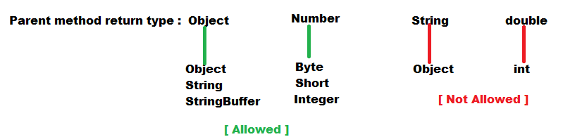
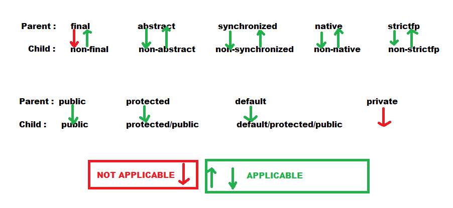
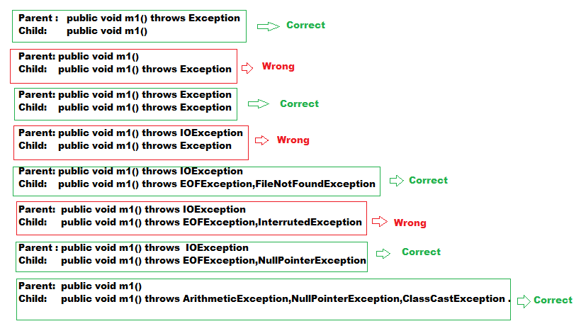
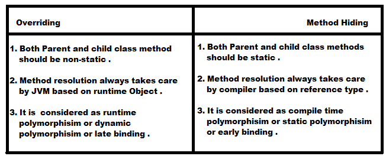
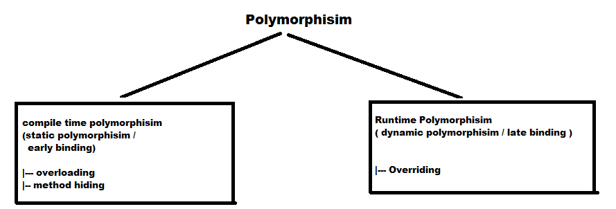

Overriding:
- Whatever the methods parent has by default available to every child through inheritance .
- If the child class does not satisfied with parent class implementation then it is allowed to override that method based on its requirement .
- In overriding JVM is responsible for method resolution and it is based on runtime object .
Hence overriding is considered as runtime polymorphisim or dynamic polymorphisim or late binding .
Rules for Overriding:
- In overriding method names and arguments must be same . i.e method signature must be same .
- Return types must be same . But this rule is applicable up to jdk 1.4 version only . From 1.5 version onwards co-variant return types are allowed
According to this rule child class method return type need not be same as parent class method return type.

- Parent class private methods are not available for child class and hence overriding concept is not applicable for private methods .
- Based on our requirement we can define exactly same private method in child class also, but it is not overriding .
- We can not override Parent class final methods .
- Parent class abstract methods we have to override in child class to provide implementation .
- We can override non abstract method as abstract .
- While overriding we can not reduce the scope of access modifires, but we can increase the scope .

- While overriding if child class method throws any checked exception compulsory parent class method throws same checked exception or its parent exception .
There are no restriction for unchecked exceptions .

Overriding with respect to static modifiers:
- We can not override a static method as non-static method.
- Similarly we can not override a non-static method as static method .
Method Hiding:
- All rules of method hiding are exactly same as overriding except the following difference .

Overriding with respect to var-arg method :
- We can not override a var-arg method with normal method.If we are trying to override it will become overloading but not overriding.
- We can override a var-arg method with another var-arg method only.
Overriding with respect to variables :
- Overriding concept is applicable only for methods but not for variables .
- Variable resolution always takes care by compiler based on reference type irrespective of whether the variables are static or not .
Polymorphisim :
- Having same name with different forms is the concept of polymorphisim .
- we can use same abs() method for any type of argument .
- We can use the same List reference to hold any of its implemented class object .
